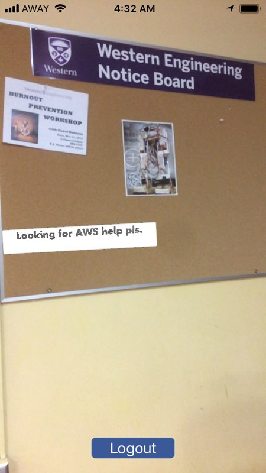
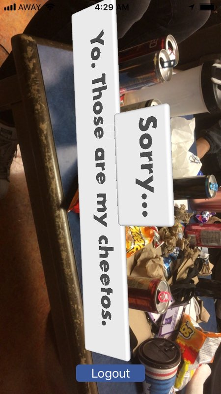
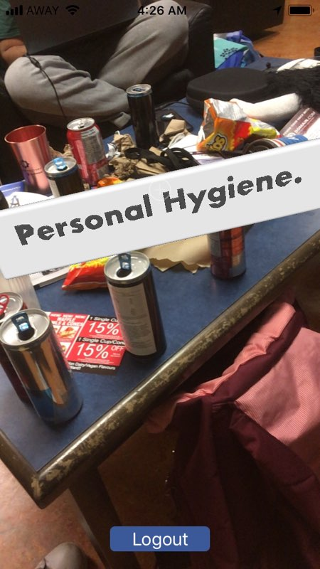

shARe
A Virtual Anonymous Discussion Board Through Your Smartphone Camera Lens
A Virtual Anonymous Discussion Board Through Your Smartphone Camera Lens
shARe offers a third dimension to online anonymous thought posting, creating an interactive environment through the lens of your smartphone camera. Users can generate anonymous word posts in-app and plant the 3D comments in their 360-degree view within a 20m radius. Additionally, users can also create physical threads through sequential posting with respect to another user's post.
  